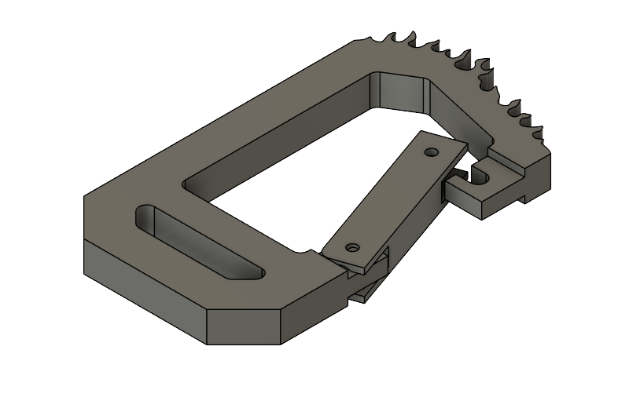
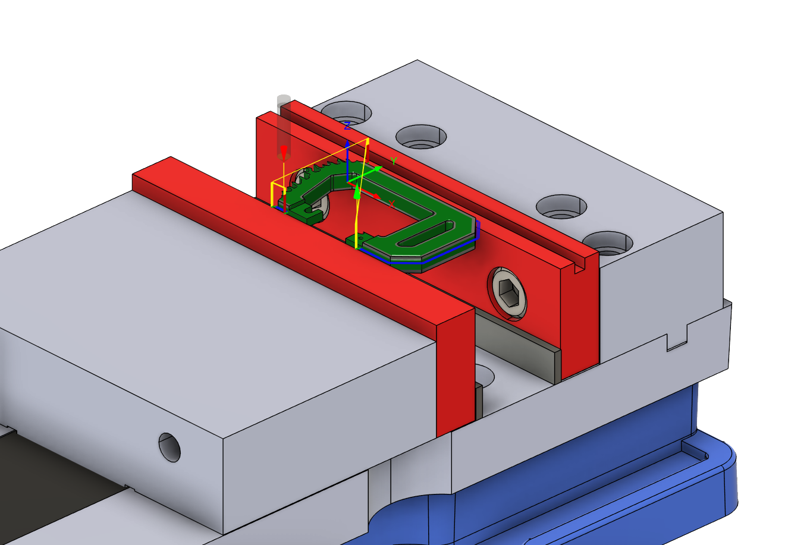
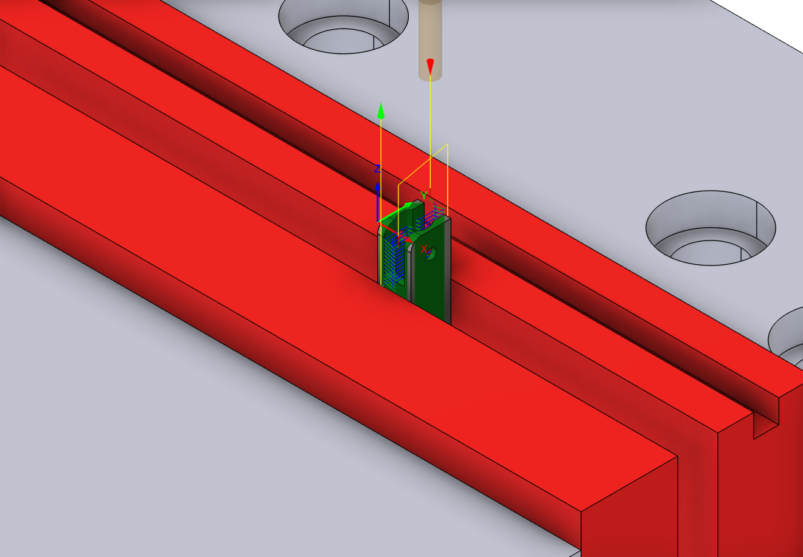
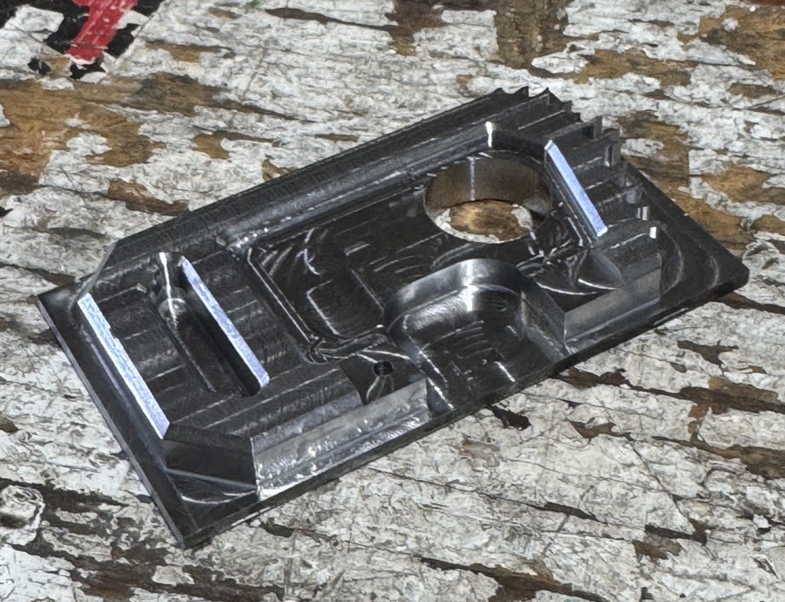
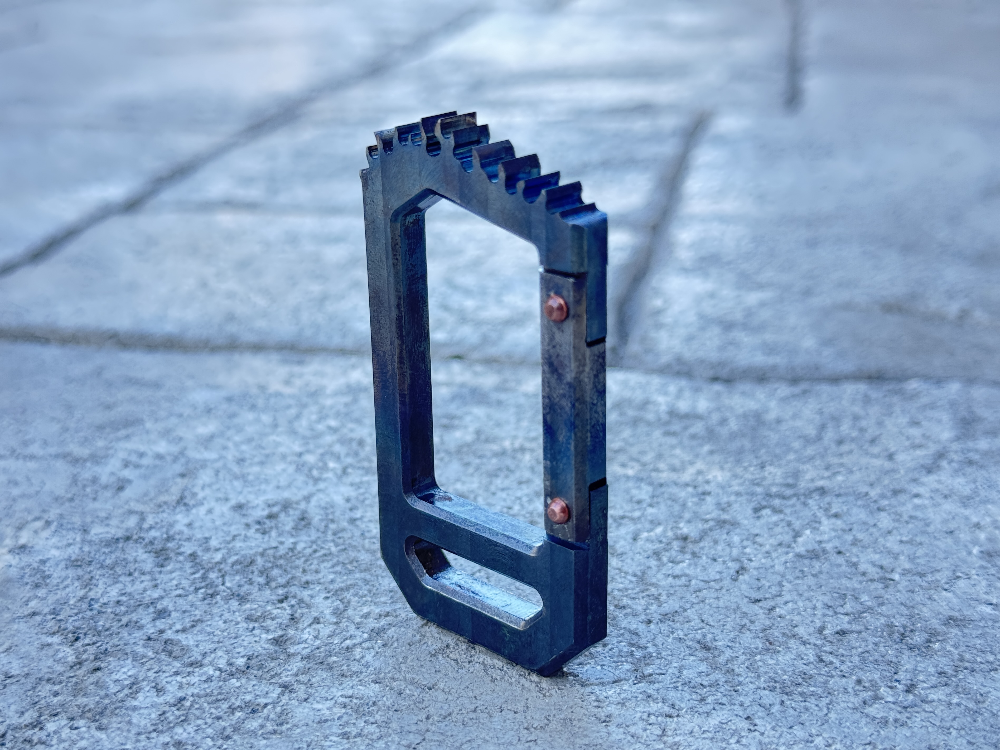
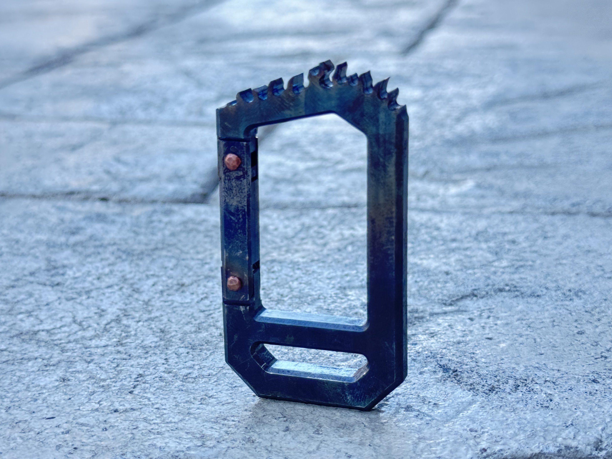
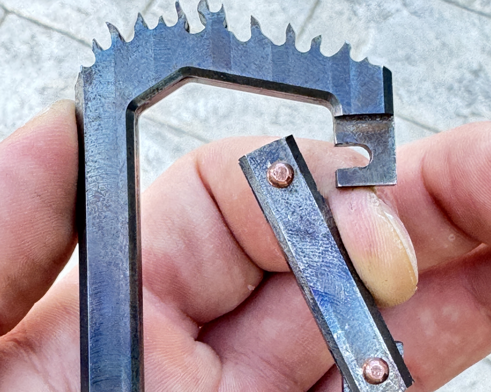

1018 Low-Carbon Steel
Project case study
Flaming Carabiner
A mechanical design and machining project focused on taking a spring-loadedcarabiner concept from CAD to a functional assembly.
- Ownership
- Personal project
- Skills Developed
-
- Design evaluation
- Design for manufacturing
- Spring mechanism design
- CAD/CAM
- Machining
- Iteration
- Result
- Functional spring-loaded carabiner with unique details and finish.









Overview
What I made
I designed and manufactured my own everyday-carry carabiner to better understand the design geometry, component fit, and mechanical details behind a functional spring-loaded assembly.
To make the design more distinctive, I added flame detailing along the top profile. I machined the part from carbon steel so it could be heat treated for a visible color transition and a custom finished appearance.
- Haas CNC Super Mini Mill
- Cold saw
- Grinding wheel
- Dial Indicator
- Blowtorch
- Body
- Gate
- Spring system
- Solid copper rivets
- Gate to body clearance
- Gate tongue length
- Spring bore depth
Process
Defined functional concept.
Conducted research on different carabiner closure methods, selected a spring-loaded gate for reliability and usability. Chose carbon steel material to experiment with heat-treat color variation.
Modeled components, built CAD assembly.
Designed the carabiner body and gate using Fusion, ensuring critical fits and clearances. Utilized assembly for iterative design process and verify gate movement.
Created CAM workflow, executed precision machining.
Used 3-axis CNC machining to produce the body and gate components. An initial flip operation caused mismatch, so I redesigned the workflow around a precision bore to better locate the WCS origin between setups.
Heat-treated components.
Cleaned body and gate componenets. Utilized a blow torch to achieve the desired color transition.
Assembled components and tested functionality.
Installed the spring system and iteratively adjusted spring length and gate tongue geometry to control spring travel, improving mechanism smoothness while preserve strength. Finished by installing solid copper rivets.